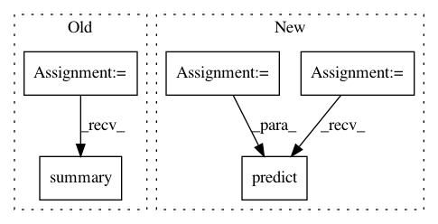

09e4a76102ff4a06a835180237ea171eb475985c,keras_/models/mobilenet.py,,_test,#,370
Before Change
// model.add(nn.Dropout(0.2))
// model.add(nn.Dense(1000, activation="softmax"))
model = mobilenet_wd4()
model.compile(
optimizer="rmsprop",
loss="categorical_crossentropy",
metrics=["accuracy"])
data = np.random.random((20, 3, 224, 224)).astype(np.float32)
labels = keras.utils.to_categorical(np.random.randint(1000, size=(20, 1)), num_classes=1000)
model.fit(data, labels, epochs=2, batch_size=10)
model.summary()
weight_count = model.count_params()
print("{}".format(weight_count))
// models = [
After Change
for model in models:
net = model(pretrained=pretrained)
//net.summary()
weight_count = keras.utils.layer_utils.count_params(net.trainable_weights)
print("m={}, {}".format(model.__name__, weight_count))
assert (model != mobilenet_w1 or weight_count == 4231976)
assert (model != mobilenet_w3d4 or weight_count == 2585560)
assert (model != mobilenet_wd2 or weight_count == 1331592)
assert (model != mobilenet_wd4 or weight_count == 470072)
assert (model != fdmobilenet_w1 or weight_count == 2901288)
assert (model != fdmobilenet_w3d4 or weight_count == 1833304)
assert (model != fdmobilenet_wd2 or weight_count == 993928)
assert (model != fdmobilenet_wd4 or weight_count == 383160)
x = np.zeros((1, 224, 224, 3), np.float32)
y = net.predict(x)
assert (y.shape == (1, 1000))
if __name__ == "__main__":
In pattern: SUPERPATTERN
Frequency: 3
Non-data size: 5
Instances
Project Name: osmr/imgclsmob
Commit Name: 09e4a76102ff4a06a835180237ea171eb475985c
Time: 2018-09-19
Author: osemery@gmail.com
File Name: keras_/models/mobilenet.py
Class Name:
Method Name: _test
Project Name: philipperemy/deep-speaker
Commit Name: d14ad44d0f425c04be5a6cdca13fc513fba53843
Time: 2017-06-12
Author: premy@reactive.co.jp
File Name: test_models_train.py
Class Name:
Method Name:
Project Name: philipperemy/deep-speaker
Commit Name: 795470ff95ce2b18d40dec5c04b6c6f5ba4c23bf
Time: 2020-04-05
Author: premy.enseirb@gmail.com
File Name: v4/conv_models.py
Class Name:
Method Name: train